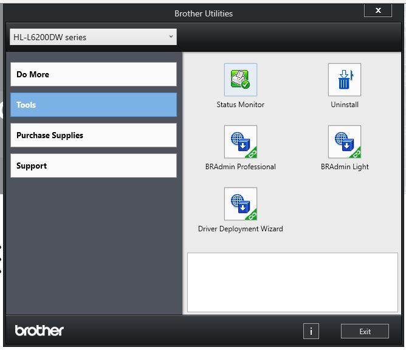

Chapter Ten is UponUs
Printers. On a rainy day in December 2011, the Hart Center computer lab was waiting for the technician to arrive and solve the problem with lab printer. Senior were taking advantage of the free print service. There's nothing like being a war boomer and sending your print job to the printer. Click and away the page flies to the kackling sound an HP612 laser black and white printer. My first task was to confirm that there was a Problem? Many a time I could not confirm the problem. That's when I learned the meaning of User vs Abuser. But today I was presented with an error code. So I start with reset everything: replug system. Check network cable. Find printer on network. Check driver on computer. Check printer service on computer. Restart service. Ping printer from command line. Connect up to printer with laptop and try to print to it. Go to HP website and get driver. There is no driver. There is a substitute driver under another printer model. No one knows this but me. I tried to tell people in the logs what driver worked on the 612 but no one understood the significance of the log entry. I downloader the mislable driver and re-installed it. Bingo the Printer starting to talk over the network. How can I get help with my Brother's HL-L6200DW printer? Type Brother into the Windows 10 search box and you will be greeted with [Brother Utilities].

Today we will install a Brother's HL-L6200DW series laser printer to a Linux distro.
Log files. Windows log services and system performance bean counting. On of the most rewarding functions of a computer scientist is the study of Log files. Why do we need log files in computer science. We need to trace or verify what happened since computers can complete functions quicker then we can perceive them. For instance, you might spend several seconds to plan your next computer instruction but that instruction is executed faster then you can verify it, therefore forcing you to become a computer science history investigator. There are event capturing software like wireshark. There is Syslog server that logs events. There is event viewer.
Let's play with Event View. In Windows 10 type [system] in the search box. Next, click on [system configuration] and then go to tools. Highlite [event viewer] and launch.
Users and Groups A computer can have many users and users who belong to Groups but it is difficult or not common to have more then one user at the computer at once. Although it can be common to have Users with root privileges to use the service of the computer at the same time. What is a User. What is the difference between a User and an application the start a network session with a server while the User is playing solitaire. Groups and Users can connect to a server and use the server at the same time. What allows a User to log into a computer and Use It. At what runlevel is a User in linux. What allows a User to access root in Linux. What is root in Linux? What is root in windows? Is Linux true root? Can I access system instruction in Linux and Not Windows.